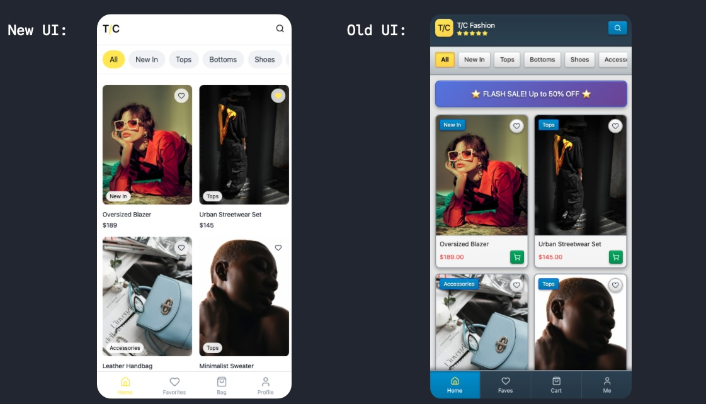
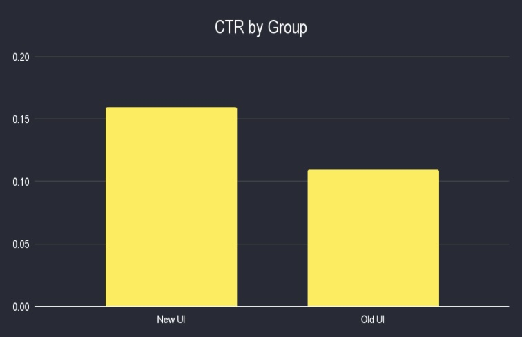
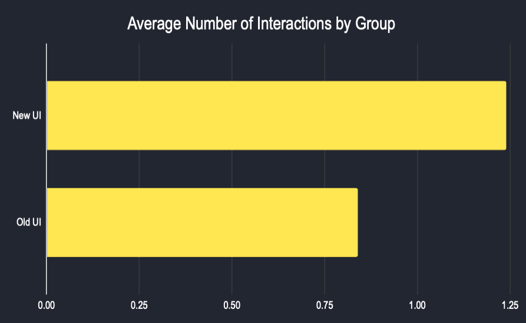
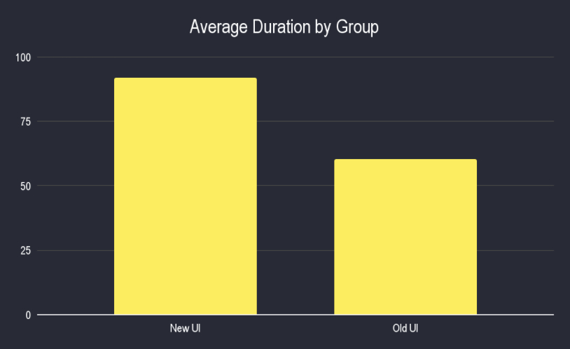
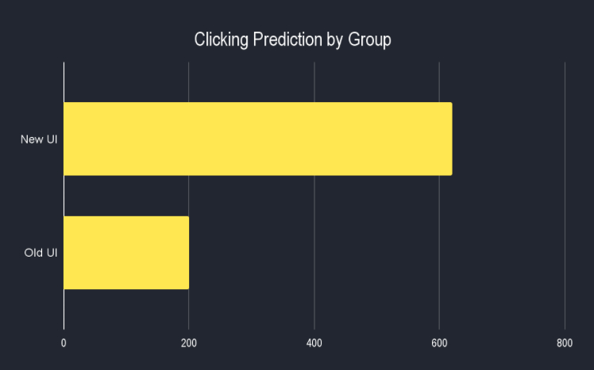

T/C is a Canada-based app company specializing in trendy clothing and accessories for a global audience. Founded in 2024, the company has rapidly scaled, now serving nearly 100,000 customers with over 158,000 transactions and generating more than $30 million in revenue.
Business Focus
To maintain a competitive edge and enhance customer engagement, T/C undertook a user interface (UI) redesign. Reporting to the Head of Operations, a comprehensive A/B testing analysis was done to evaluate the performance of the new UI relative to the existing version, providing actionable insights to inform product and design stakeholders.

Click-Through Rate (CTR)
CTR shows how many people not only see the ads but actually click into the app, turning interest into action. CTR is a key metric because it helps T/C understand if their ads are truly capturing attention and sparking curiosity. A higher CTR means the audience is interested, and T/C's marketing is effective at driving people to explore the product.

CTR increased from 9.23% to 12.31% (33% increase).
Higher ad engagement and stronger first-touch appeal.
New UI design more effectively captures attention.
Interactions
Average searches per session indicate how actively users explore and discover content within the app. This metric helps reveal curiosity, intent to find value, and overall engagement beyond just opening the app. Higher search activity suggests deeper interest and a stronger drive to interact with available features and content.

Searches per user rose from 0.84 to 1.24 (47.6% increase).
Users explored more products with improved navigation.
Average session duration shows how long users stay active in the app and serves as a signal of engagement quality and content relevance. Longer sessions suggest users are finding value, staying interested, and interacting meaningfully with what the app offers.

Average time increased from 58.90s to 92.38s (57% increase).
New UI kept users engaged longer.
Smoother flow and clearer visual hierarchy improved usability.
Future Clicking Prediction

The results clearly favor the new UI. Assuming this sample reflects the app's users, the new interface is expected to generate significantly higher engagement with approximately 4.2 additional clicks per user compared to the old UI. For example, if the old UI produced 200 total clicks, the new UI would be projected to deliver around 620 clicks. This indicates a substantial improvement in user exploration and overall performance.
Report Summary
Across every key metric, the redesigned interface outperformed the previous layout. The data strongly supports adopting the new UI as the primary experience, with results indicating higher user curiosity, longer browsing time, and stronger conversion potential.
If the new UI were to be rolled out today, the new UI would likely accelerate engagement growth and strengthen acquisition efficiency. Keeping the old interface would mean missing out on measurable interaction gains and potential revenue lift.
Technical Details
Data:
Data was generated by creating random numbers from known statistical distributions. Before this, systematic sampling was performed within the company to test different UI versions. Using Python, a sample was drawn from 500 employees. A starting point and the number of employees skipped were determined using the formula: number of employees divided by the number of samples needed (employees / samples_needed). The dataset included the following columns:
Statistical Model:
To predict the future number of clicks for the app, a suitable model was required. Assumptions of independence and normality were first assessed. The data is independent because employees' clicking behavior does not influence one another. Normality was checked using a normal Q-Q plot, and the points did not align with the 45-degree reference line, indicating the normality assumption was not met. Initially, a linear regression model was considered, but due to the lack of normality, it was not appropriate. Instead, a Mann-Whitney U test was used to model the data, as it requires independence but does not assume normality. The analysis indicated that the new UI is expected to increase engagement by approximately 4.2 clicks per user.
Code Snippets
Python was utilized via Jupyter Notebook for this project. The main libraries pandas, NumPy, and matplotlib were used to wrangle and model the data.